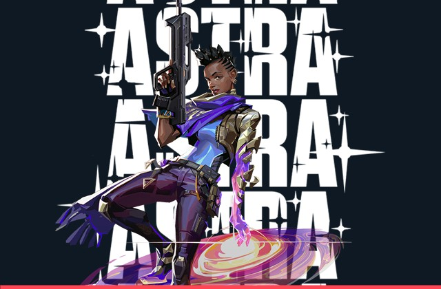
Astra (Controladora)
Agente ganense que utiliza energias cósmicas em sua forma astral para posicionar estrelas que viram fumaças, concussões ou poços gravitacionais.
Cada agente pertence a uma das quatro funções táticas: Duelista, Controlador, Iniciador ou Sentinela. Uma equipe equilibrada combina essas funções para atacar e defender com eficiência.

Agente ganense que utiliza energias cósmicas em sua forma astral para posicionar estrelas que viram fumaças, concussões ou poços gravitacionais.
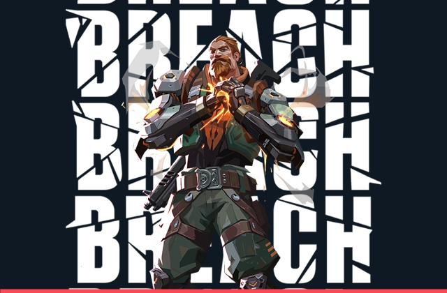
Homem-biônico sueco que dispara jatos cinéticos, flashes e abalos sísmicos através das paredes para forçar a abertura dos Spike Sites.
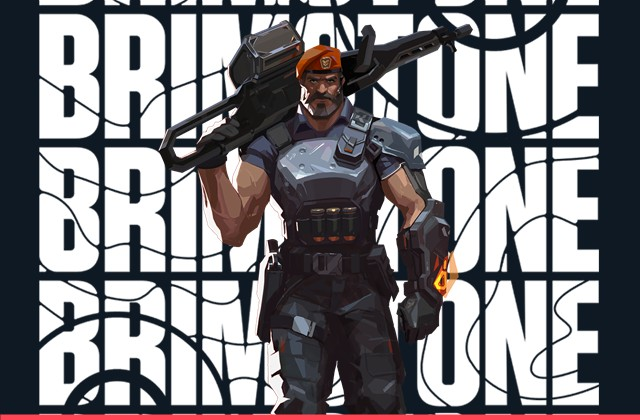
Comandante norte-americano cujo arsenal orbital lança três fumaças duradouras, Sinalizador Estimulante, projétil incendiário e Ataque Orbital.
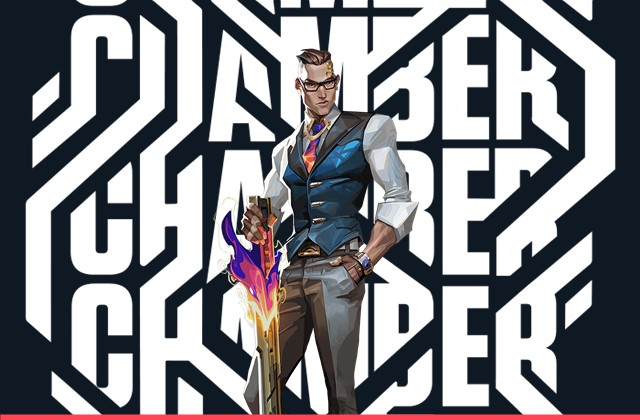
Criador de armas francês que segura linhas longas com seu arsenal personalizado (Caçador de Cabeças e Tour de Force) e âncoras de teleporte.
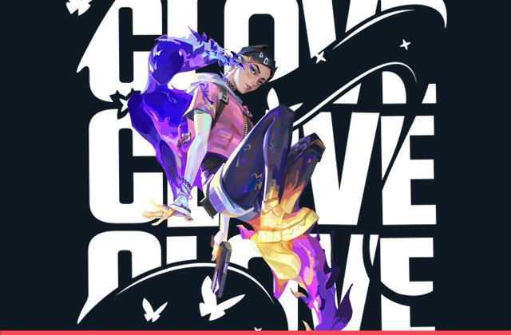
Originárie da Escócia, Clove mantém o time protegido lançando fumaças mesmo após ser abatide e pode retornar à vida com sua Ultimate.
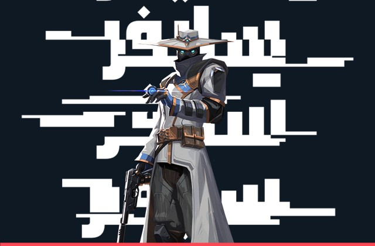
Informante do Marrocos que vigia cada movimento adversário usando Fios-armadilha, Jaulas Cibernéticas e sua Câmera de Vigilância.
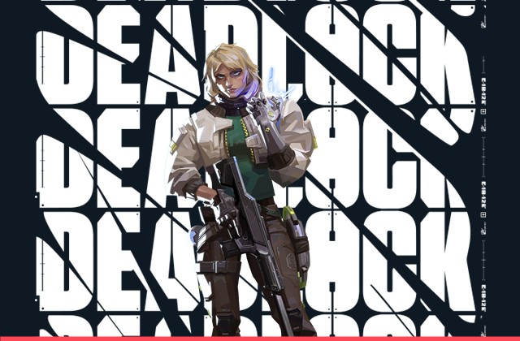
Agente norueguesa que posiciona sensores sônicos, barreiras de contenção e nanofios de alta tecnologia para travar execuções inimigas.
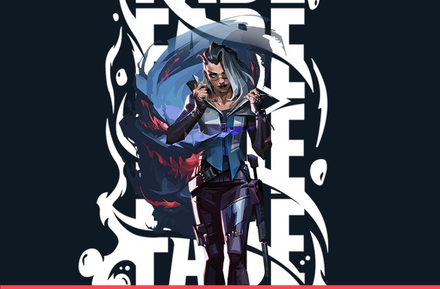
Caçadora de recompensas turca que usa o poder dos pesadelos para revelar trilhas de inimigos, prendê-los e deixá-los ensurdecidos.
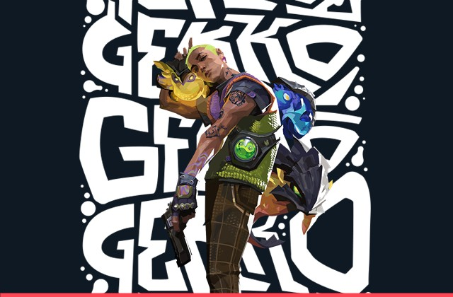
Lidera criaturas caóticas como Wingman (que planta e desarma a Spike) e Dizzy, podendo recolhê-las pelo mapa para reutilizá-las no round.
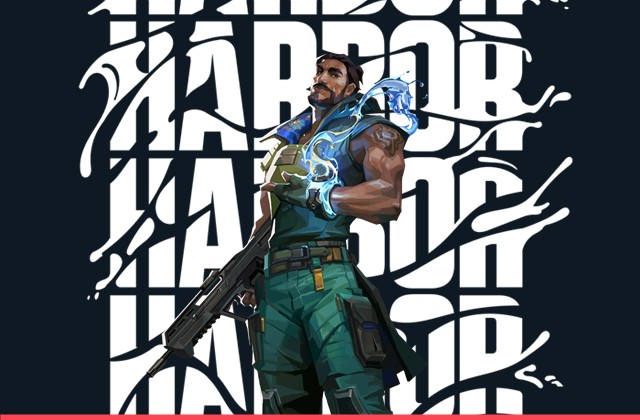
Vindo do litoral indiano, empunha tecnologia ancestral com domínio sobre a água para criar paredes curvas, escudos aquáticos e marés de avanço.
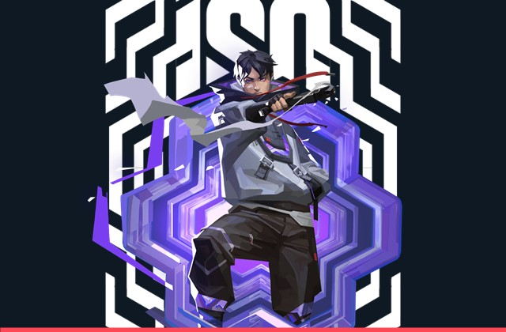
Mercenário chinês que reconfigura a energia do ambiente em escudos à prova de balas e isola adversários em uma arena de duelo individual.

Representando a Coreia do Sul, Jett tem um estilo de luta ágil e evasivo que permite avançar rapidamente e eliminar alvos antes que possam reagir.
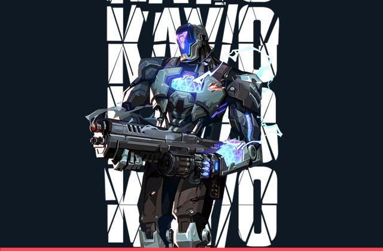
Máquina de guerra construída para neutralizar Radiantes, suprimindo as habilidades inimigas com sua lâmina e granadas de luz.
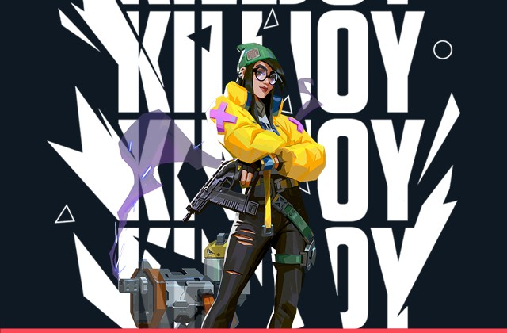
Inventora alemã que domina áreas inteiras com sua Torreta, Robô de Alarme, granadas Nanoenxame e seu dispositivo de Confinamento.
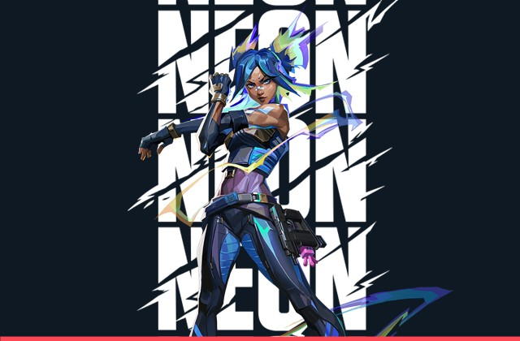
Agente filipina que avança em velocidade bioelétrica extrema, deslizando para surpreender adversários e disparando raios de alta precisão.
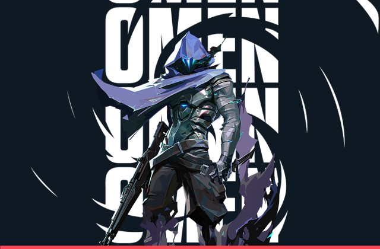
Caçador das sombras que aplica fumaças recarregáveis à distância, cega corredores inteiros com Paranoia e se teleporta pelo mapa.
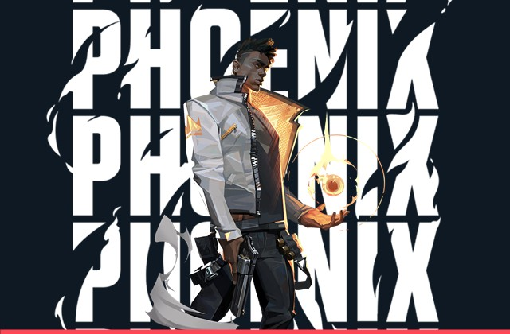
Vindo do Reino Unido, Phoenix controla o fogo para curar a si mesmo, criar paredes flamejantes, cegar com Bola Curva e renascer com sua Ultimate.
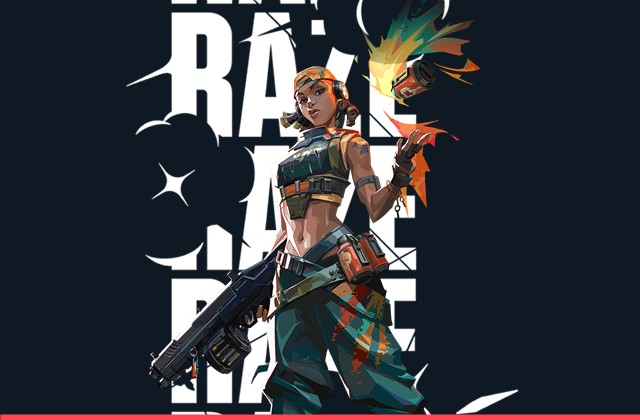
Diretamente do Brasil, Raze usa explosivos pesados, cargas de demolição e seu Bumba para desentocar inimigos entrincheirados e abrir espaço.
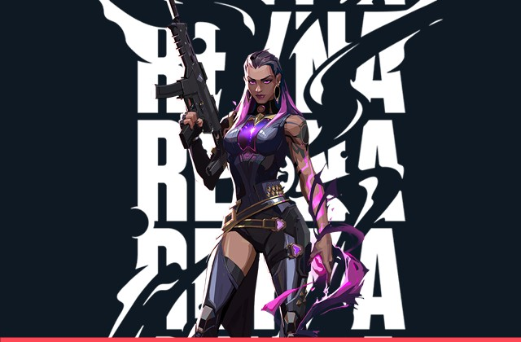
Criada no coração do México, Reyna domina o combate individual e consome orbes de alma após abates para se curar ou ficar intangível.
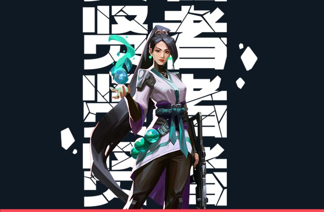
Fortaleza chinesa capaz de bloquear passagens com seu Orbe de Barreira, atrasar avanços com Orbe de Lentidão, curar e reviver aliados.
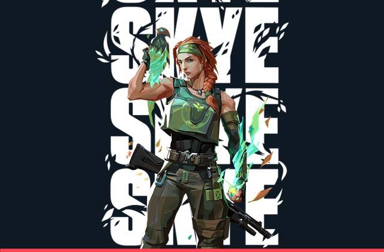
Direto da Austrália, Skye lidera feras espirituais que cegam, rastreiam, causam concussão nos inimigos e curam os aliados em área.
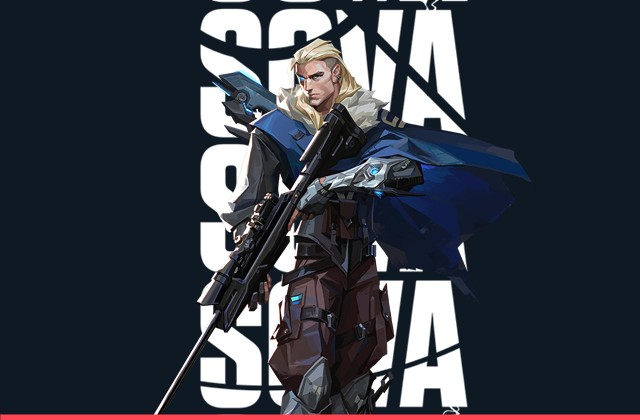
Especialista russo em reconhecimento que localiza adversários escondidos usando Flecha Rastreadora, Drone Coruja e Fúria do Caçador.
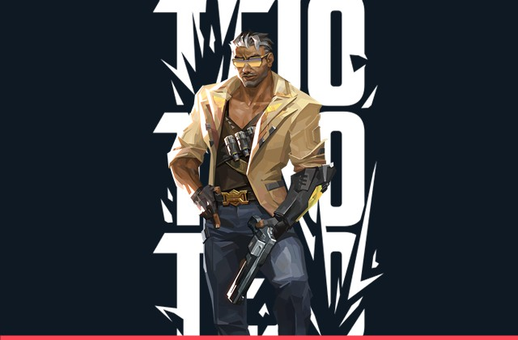
Consultor de inteligência veterano da Colômbia que utiliza orientação balística de precisão e drones furtivos para desalojar defensores.
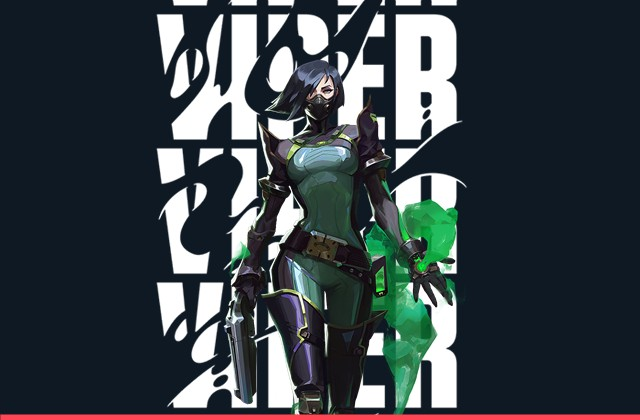
Química dos Estados Unidos que utiliza dispositivos venenosos e sua Cortina Tóxica para dividir Spike Sites e deteriorar a vida inimiga.
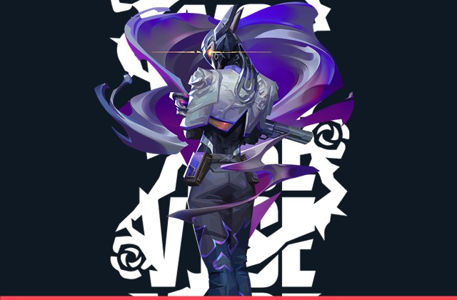
Mestre dos metais que manipula metal líquido para erguer paredes indestrutíveis ao contato, espinhos e inutilizar as armas primárias inimigas.
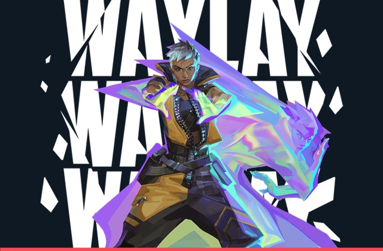
Radiante prismática da Tailândia que se transforma em pura luz para atravessar o campo de batalha e recuar em segurança em um piscar de olhos.
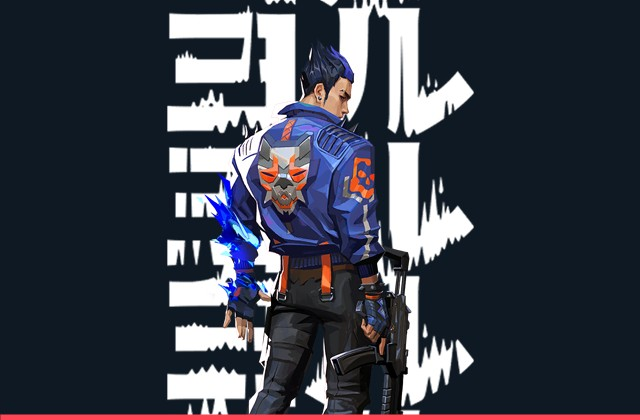
Nativo do Japão, Yoru abre fendas na realidade para infiltrar as linhas inimigas com passos falsos, clones, flashes e teleporte dimensional.